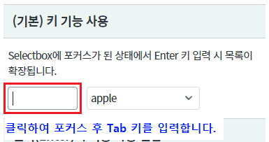
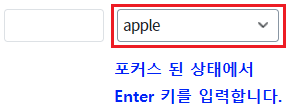
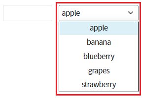
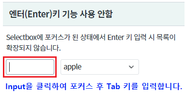
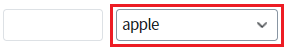
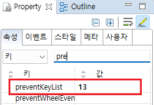
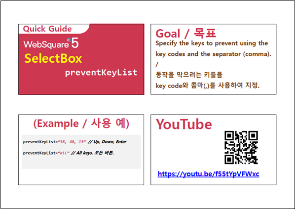

컴포넌트에 포커스 되어있고 키보드 키가 입력되었을 때, 컴포넌트에서 제공하는 기본 기능을 사용하지 않는 예제입니다. (목록 확장, 항목 선택 등) 속성 preventKeyList 에 기능을 제외할 KeyCode를 지정하여 사용할 수 있습니다. 이 기능은 보통 키를 이용한 기능을 직접 구현할 때 사용되는 설정입니다.
(기본) 키 기능 사용
엔터(Enter)키 기능 사용 안함
Input 컴포넌트에서 Tab 키로 Selectbox에 포커스를 이동한 뒤 Enter 키를 입력하여 동작을 비교합니다.
영역 [(기본) 키 기능 사용]의 InputBox를 클릭한 뒤 Tab 키를 입력하여 Selectbox로 포커스 합니다.
[브라우저(Chrome) 실행 예시]

[브라우저(Chrome) 실행 예시]

목록이 확장됩니다.
[브라우저(Chrome) 실행 예시]

영역 [엔터(Enter)키 기능 사용 안함]의 InputBox를 클릭한 뒤 Tab 키를 입력하여 Selectbox로 포커스 합니다.
[브라우저(Chrome) 실행 예시]

[브라우저(Chrome) 실행 예시]
목록이 확장되지 않습니다.
[브라우저(Chrome) 실행 예시]

속성을 지정합니다.
[필수] preventKeyList="키 코드" //웹스퀘어 엔진 내부에서 처리하는 키 동작을 막는 기능. 막고자 하는 keycode 값들을 구분자 , 를 사용하여 나열한다. 모든 키를 차단하려면 all을 입력한다.
ex) preventKeyList="13" //Enter 키 기능 사용 안함
그림 1.웹스퀘어5 SP5 스튜디오의 Property View(속성창) 예시

[소스 코드 예시]
<!-- selectbox의 소스 본문 예시 --> <xf:select1 preventKeyList="13" id="sbx_exam2"> <!-- 중략 --> </xf:select1>
preventKeyList
[웹스퀘어5 SP5 개발 가이드] SelectBox
링크 : https://docs1.inswave.com/sp5_user_guide/8df43d1f59fab704#641326163f434b17
[웹스퀘어5 SP5 개발 가이드] SelectBox 특정 키 동작 방지
링크 : https://docs1.inswave.com/sp5_user_guide/8df43d1f59fab704#0510de2c9bf3a732
SelectBox 특정 키 동작 방지
링크 : https://youtu.be/f55tYpVFWxc
